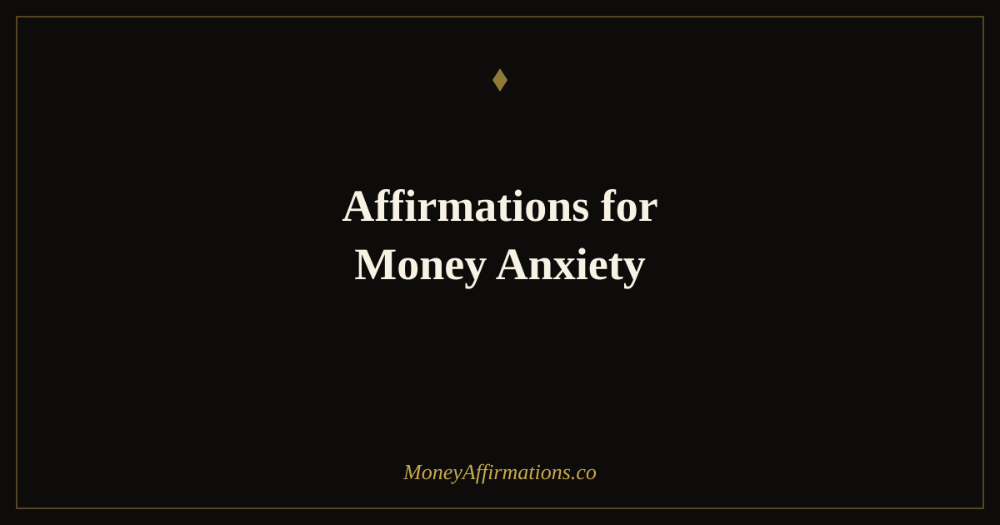

50 Affirmations for Money Anxiety to Calm Financial Stress and Fear

Money anxiety does not feel like a thought — it feels like a weight pressing on your chest every time you open your banking app, a tight throat when a bill arrives, a low hum of dread that never quite goes away. Millions of people live with this daily, and most traditional affirmation lists make it worse by demanding fake positivity before the fear has been addressed at all.
This collection does something different. It is structured as a four-phase emotional regulation sequence, moving from honest acknowledgement through physical grounding, into cognitive reframing, and finally into empowered action. You cannot shortcut the process. Phase 1 exists because your nervous system will not absorb reassurance until it feels heard. Move through each phase slowly, and return to Phase 1 any time the anxiety spikes again.
What are money anxiety affirmations?
Money anxiety affirmations are intentional statements designed to interrupt the stress-and-shame spiral that financial worry creates. Unlike generic affirmations that simply assert wealth or abundance, money anxiety affirmations begin where you actually are — acknowledging fear, reducing the physical stress response, and only then introducing new perspectives about your relationship with money.
They are not magic words. They are a form of directed self-talk that, when practised consistently, begins to reshape the automatic thoughts your brain generates when it encounters financial information. Over time, the goal is not to eliminate financial concern entirely — appropriate concern about money is healthy and motivating — but to lower the baseline level of threat so that you can think clearly, make good decisions, and take constructive action rather than freezing in panic.
50 affirmations for money anxiety
Do not skip Phase 1. Most affirmation lists jump straight to positivity — but when anxiety is high, the nervous system needs acknowledgement before it can receive reassurance. Move through each phase slowly.
Phase 1 — Acknowledge what you are feeling
- It is okay that I feel anxious about money right now.
- My feelings about money are valid and deserve to be heard.
- I do not have to pretend everything is fine when it does not feel fine.
- I can acknowledge this fear without letting it define my future.
- It is safe to feel this discomfort — feelings are not facts.
- Many people feel exactly what I am feeling, and they find their way through.
- I am not weak for worrying about money — I am human.
- This anxiety is my mind trying to protect me, and I appreciate the intent.
- I am allowed to sit with this feeling for a moment without trying to fix it immediately.
- Acknowledging my financial stress is the first step toward releasing it.
Phase 2 — Breathe and ground yourself
- Right now, in this moment, I am physically safe.
- I take a slow breath and feel my body begin to settle.
- My feet are on the ground and I am supported.
- This moment — right here, right now — is manageable.
- I slow down and let my nervous system catch up with reality.
- My breath is free and my body knows how to regulate itself.
- The anxiety I feel about the future does not change what is true right now.
- I bring my attention back to this breath, this moment, this room.
- I am not in danger right now — I am safe to think clearly.
- With each exhale, I release a little of the tension I have been holding.
Phase 3 — Reframe the story
- Money is a tool, not a threat — and tools can be learned and used.
- My financial situation is a starting point, not a life sentence.
- I have navigated difficult situations before, and I have the capacity to do so again.
- The story I tell about money does not have to be the story I inherited.
- I am separate from my bank balance — my worth is not measured in dollars.
- Financial challenges are problems to be solved, not signs that I am failing at life.
- I can hold financial concern and financial hope at the same time.
- My relationship with money is something I get to define and redefine.
- Scarcity thinking is a habit, and habits can be changed with consistent practice.
- Every person I admire financially once stood where I am standing now.
- I am allowed to learn about money without shame — knowledge replaces fear.
- I see money challenges as information, not evidence of unworthiness.
- My financial story is still being written, and I hold the pen.
- I choose to see this moment as a turning point, not a dead end.
- The anxiety about money I feel today is loosening its grip as I change my thoughts.
Phase 4 — Move forward with empowerment
- I handle money challenges one step at a time, and that is enough.
- I take one small action today, and small actions create real change.
- I am building a calmer, more confident relationship with money every day.
- I am capable of learning, adapting, and improving my financial situation.
- I ask for help when I need it — seeking support is a strength, not a failure.
- I face my financial reality clearly, because clarity is the beginning of change.
- I am not behind — I am exactly where my journey has brought me, and I move forward from here.
- I make decisions from a place of calm clarity rather than panic.
- Each day I practise these affirmations, I am rewiring my response to financial stress.
- I deserve financial peace, and I am actively creating it.
- Money flows to me more easily when I release the fear that blocks it.
- I trust my ability to figure things out, even when the path is not yet clear.
- I release shame about money and replace it with curiosity and learning.
- I am building evidence every day that I can handle whatever money brings.
- Financial calm is not a destination — it is a practice, and I am practising it now.
How to use these affirmations
The four-phase structure is intentional — resist the urge to skip to Phase 3 or 4 when anxiety is high. The validation in Phase 1 and the grounding in Phase 2 are doing important nervous system work that makes the later phases land more deeply.
For acute anxiety episodes — when you have just seen a bill, had a difficult money conversation, or woken up at 3am worrying — start at Phase 1 and read slowly. Say each affirmation aloud if you can. Take a breath between each one. You are not rushing to feel better; you are accompanying yourself through the feeling.
For daily practice, reading through all four phases takes about eight minutes. Morning practice before you check your phone or email is especially effective, because it sets your baseline nervous system state before the day's financial triggers arrive. Some people find it helpful to keep Phase 1 and Phase 2 nearby for moments of acute stress, almost like a pocket grounding tool.
You may also want to combine this practice with affirmations before paying bills — a complementary set designed specifically for the moment when anxiety peaks around financial transactions. Together, they build a robust daily ritual for financial calm.
Money anxiety and the nervous system: why financial stress is physical, not just mental
When you feel money anxiety, you are not being dramatic or irrational — you are experiencing a genuine neurological event. The brain's amygdala, which processes perceived threats, does not distinguish reliably between physical danger and financial danger. Research has confirmed that financial stress activates the same threat-response neural pathways as acute physical threats, triggering the release of cortisol and adrenaline, constricting higher cognitive function, and pushing the brain into fight, flight, or freeze mode.
A landmark 2013 study by Mani et al., published in Science, demonstrated that scarcity — particularly financial scarcity — actually reduces cognitive bandwidth. People under financial stress performed significantly worse on cognitive tests, not because they were less intelligent, but because mental resources were being consumed by financial worry. The implication is striking: financial anxiety does not just feel bad, it actively impairs the decision-making you need to improve your situation.
This is where somatic experiencing and polyvagal theory become relevant. Dr. Stephen Porges' polyvagal theory explains that the nervous system operates in hierarchical states — safety, mobilisation (fight/flight), and shutdown (freeze). Affirmations alone cannot move you out of a mobilised or shutdown state if the body has not received signals of safety first. This is why Phase 1 and Phase 2 of this collection prioritise physical grounding before cognitive reframing. The body needs to register safety before the mind can effectively absorb new beliefs about money.
Consistent affirmation practice — particularly when paired with slow breathing — activates the parasympathetic nervous system, lowering cortisol and restoring the prefrontal cortex function needed for clear financial thinking. Over time, this creates new neural associations: money-related thoughts begin to trigger calm and clarity rather than alarm.
Tips to make them work faster
- Breathe first: Before any affirmation session, take three slow breaths — inhale for four counts, hold for four, exhale for six. This physiological sigh begins the shift from sympathetic to parasympathetic nervous system dominance.
- Go slow: Read each affirmation as if you are speaking to a frightened friend. Rushing through them is the mind trying to escape discomfort — slow down and let each statement settle.
- Write Phase 1: On days of high anxiety, write out the Phase 1 affirmations by hand rather than reading them. The act of writing engages different neural pathways and often creates a stronger sense of being heard.
- Pair with body movement: Gentle movement — a slow walk, stretching, even rocking slightly — activates the vestibulocerebellar system, which helps regulate arousal. Do Phase 1 and 2 while moving if sitting still feels impossible.
- Track the shift: Before starting, rate your anxiety from one to ten. After completing all four phases, rate it again. Seeing the number decrease — even slightly — builds evidence that the practice works, which makes it easier to return to next time.
Frequently asked questions
Is money anxiety a real psychological condition?
Yes. While 'money anxiety' is not a formal DSM diagnosis on its own, financial stress is well-documented as a significant source of generalised anxiety, and chronic financial worry activates the same threat-response systems as other anxiety disorders. Research consistently links financial stress to elevated cortisol, disrupted sleep, and impaired decision-making. Many therapists specialise in financial therapy precisely because the psychological dimension of money is real and treatable.
What should I do if I feel too anxious to even read affirmations?
Start with Phase 1 only — and read slowly, out loud if possible. If anxiety is very high, begin with breath work: inhale for four counts, hold for four, exhale for six. Do this three times before reading a single affirmation. You do not need to believe the words at first. The goal of Phase 1 is simply to let your nervous system know you are paying attention to it, not demanding it perform positivity on command.
How are these different from toxic positivity about money?
Most money affirmation lists skip straight to 'I am rich and abundant' — which can feel jarring or even dishonest when you are genuinely scared about money. This list begins with Phase 1 validation affirmations that meet you exactly where you are, without demanding false cheer. The shift to positive reframing only happens in Phase 3, after your nervous system has been acknowledged and grounded. Honest validation first, empowerment second — that is the difference.
If you are ready to take the next step beyond anxiety relief and into building an active, confident money mindset, visit our full money affirmations collection — 100 affirmations across five themes designed to transform your relationship with money from the ground up.